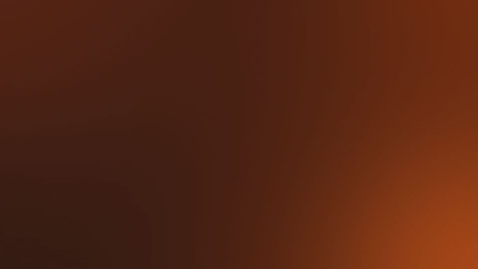
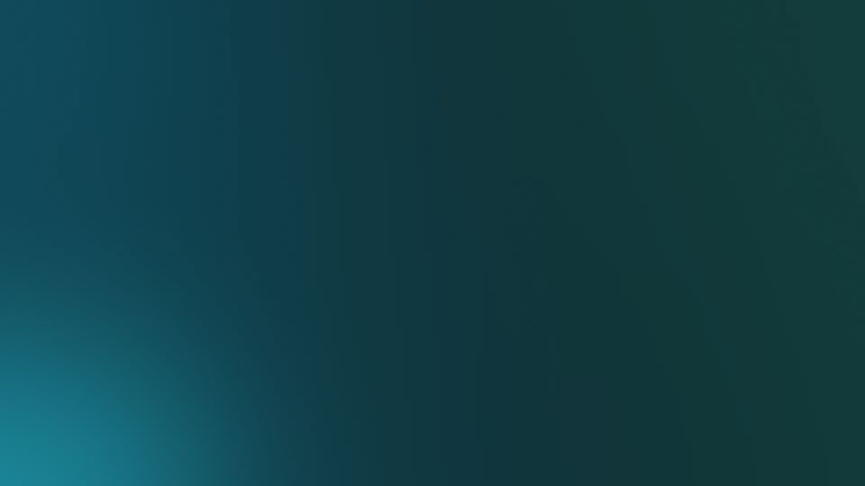
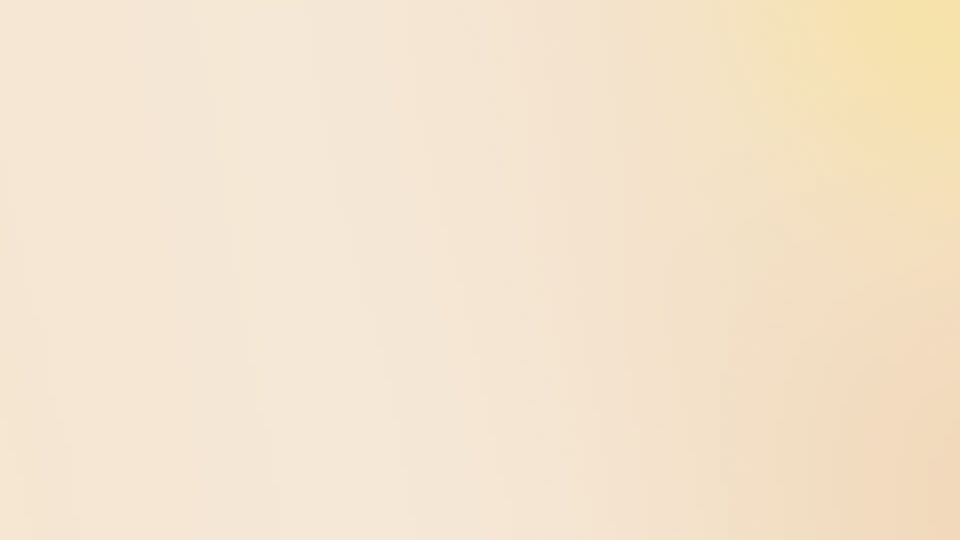
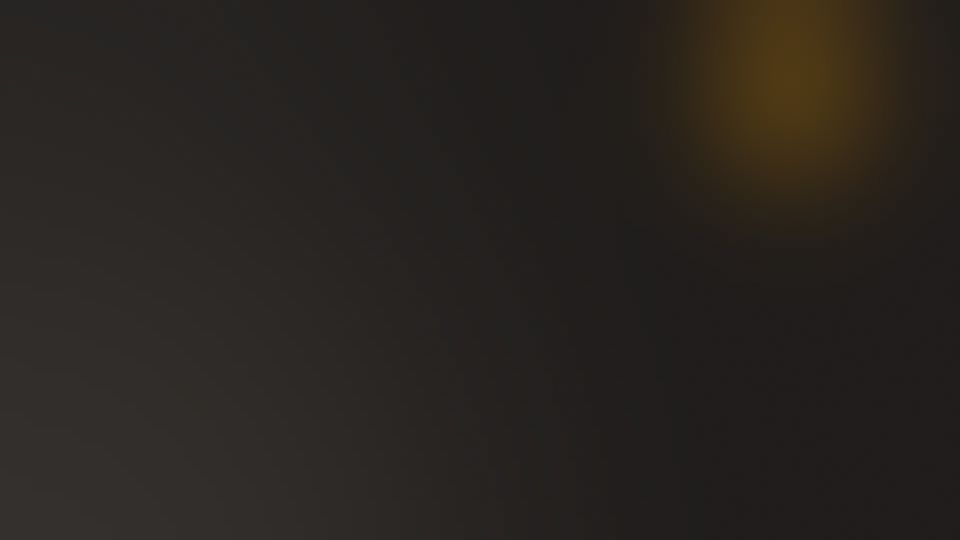

Themes
Six wallpapers made for LockedIn, free for anyone in the beta. Each comes in a Mac size (3840 by 2160) and an iPhone size.











Set one in LockedIn
- Download the Mac or iPhone version above. On iPhone, tap and hold the image and choose Save to Photos.
- In LockedIn, open Settings, then Appearance, and choose Own Photo.
- Pick the wallpaper from Photos or Files. Turn on Same wallpaper on all devices if you want it everywhere.